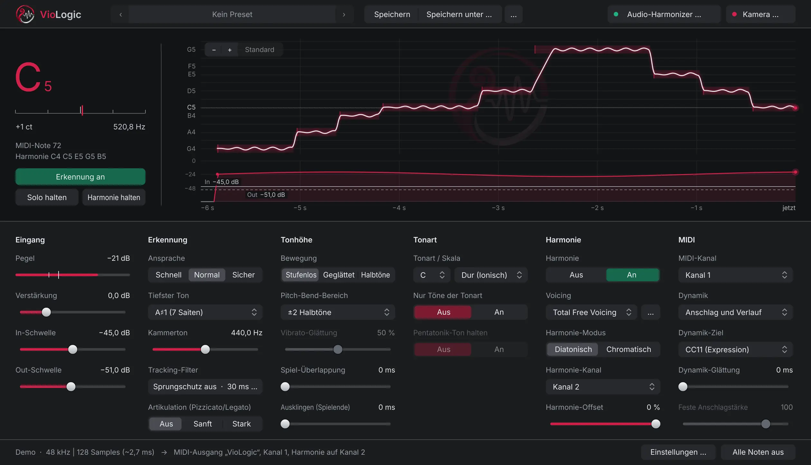
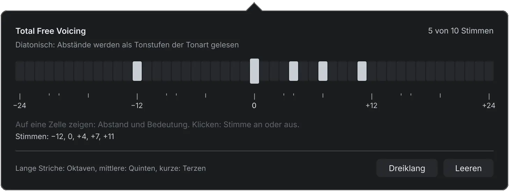
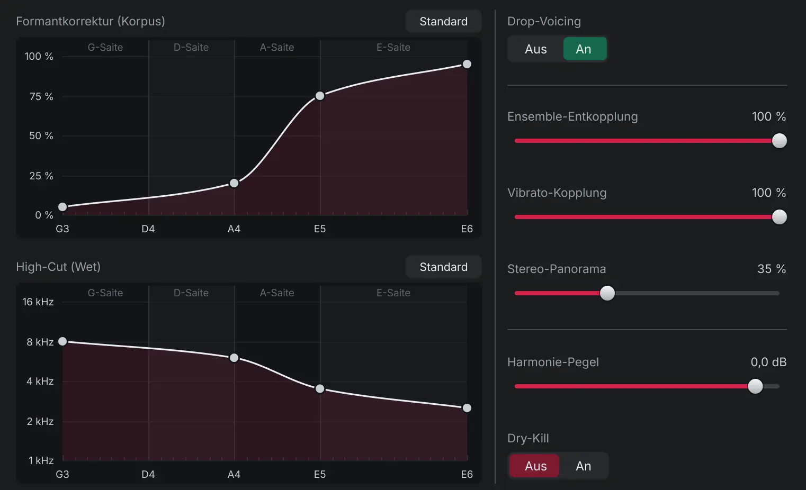
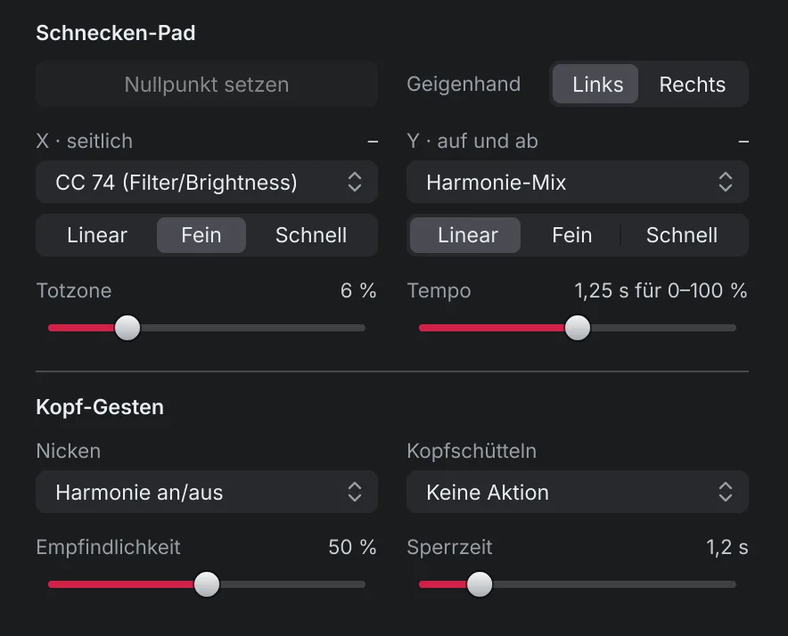

VioLogic
VioLogic hört über das Audio-Interface auf deine Geige und gibt ihre Tonhöhe als MIDI aus.
MainStage, Logic und andere Programme sehen die Geige wie ein angeschlossenes Keyboard.
Kostenlos, für macOS 11 oder neuer auf Intel und Apple Silicon. Was beim ersten Start zu tun ist, steht unter Installation.
Oder mit einer Zeile im Terminal installieren:
curl -fsSL https://raw.githubusercontent.com/XLeathnex/VioLogic/main/install.sh | bashSo kommt die Geige in MainStage
VioLogic sitzt zwischen Audio-Interface und Musikprogramm. Die App legt einen virtuellen MIDI-Ausgang an, der „VioLogic“ heißt. Bis dahin läuft Audio, danach MIDI.
-
Geige
Mit Tonabnehmer. Ausgelegt für sieben Saiten, B♭1 bis A7.
-
Audio-Interface
Die Geige hängt an einem Eingang. Puffer 64 oder 128 Samples.
-
VioLogic
Erkennt Tonhöhe und Lautstärke und macht daraus Noten, Pitch Bend und Expression.
-
MIDI-Ausgang „VioLogic“
Ein virtueller Ausgang. Programme sehen ihn wie ein angeschlossenes Keyboard.
-
MainStage, Logic
Oder ein anderes Programm mit MIDI-Eingang. Die Geige spielt dort ein Software-Instrument.
Was aus deinem Spiel wird
Einstimmig, auf gestrichene Saiten abgestimmt. Die Erkennung braucht etwa 3 % eines Prozessorkerns.
- Fingerwechsel unter einem Bogen
- Eine neue Note. Sie beginnt, bevor die alte endet, sodass einstimmige Synthesizer im Legato-Modus binden.
- Rutschen auf der Saite
- Pitch Bend auf derselben Note. Im Modus „Halbtöne“ wird stattdessen jeder erreichte Halbton neu angeschlagen.
- Vibrato
- Pitch Bend, genau wie gespielt („Stufenlos“) oder bis etwa ±40 Cent herausgefiltert („Vibrato geglättet“).
- Neuer Bogenstrich auf demselben Ton
- Eine neue Note, wenn der Pegel dabei deutlich einbricht, etwa 9 dB. Ein weicher Bogenwechsel bleibt eine Note.
- An- und Abschwellen des Bogens
- Anschlagstärke und ein laufender Controller: Expression (CC11), Modwheel (CC1) oder Breath (CC2).
- Ein Ton, der zu tief beginnt
- Solange der Bogenansatz noch anschwillt, wird die Note nachgezogen statt neu angeschlagen.
- Obertöne und leere Saiten im Ausklang
- Keine neue Note.
Das Hauptfenster
Links die gespielte Note mit Stimmgerät, rechts die letzten Sekunden, darunter alle Regler in der Reihenfolge des Signals. Jedes Bedienelement erklärt sich, wenn die Maus kurz darauf stehen bleibt.


Tonhöhe und MIDI
Die gespielte Melodie läuft als silberne Linie über dem Notenraster, die gesendeten MIDI-Noten als rote Balken darunter.
Lautstärke
Im selben Zeitraster die Lautstärkekurve des Bogens mit In- und Out-Schwelle: Über In kann ein Ton beginnen, unter Out endet er.
Ausschnitt
„+“, „−“ und „Standard“ zoomen von 1,5 Sekunden und 5 Halbtönen für Vibrato und schnelle Läufe bis 24 Sekunden und 3 Oktaven für lange Phrasen.
Harmonie
Zu jedem Ton erklingen die Stimmen eines Voicings auf einem eigenen MIDI-Kanal, immer mit dem gespielten Ton. Der Akkord richtet sich nach der Tonhöhe, die wirklich klingt: Gleitet ein Ton von C nach D, wird aus C-Dur nach 30 ms D-Moll, statt dass C-Dur mitgebogen wird.
Ganz oben in der Liste steht Total Free Voicing: bis zu 10 eigene Stimmen zwischen −24 und +24 Halbtönen. Dazu kommen Enger Dreiklang, Septakkord, Open, Power, Quart, Terz- und Sexten-Duett und fünf Oktav-Voicings. Jedes öffnet die Intervall-Matrix, in der sich Stimmen hinzufügen und abwählen lassen.
Diatonisch wird jeder Abstand als Tonstufe der Tonart gelesen, so entstehen Dur-, Moll- oder verminderte Akkorde. Chromatisch gelten genau die Halbtonabstände.
Solo halten und Harmonie halten frieren Ton oder Akkord ein, während auf der anderen Spur weitergespielt wird.


Audio-Harmonizer
Spielt die Harmoniestimmen zusätzlich mit dem eigenen Klang der Geige: Das Eingangssignal wird in der Tonhöhe verschoben und über den Audio-Ausgang ausgegeben, die Geige selbst bleibt unverändert in der Mitte.
Zwei Kurven über den Tonumfang G3 bis E6 folgen der gespielten Tonhöhe. Die Formantkorrektur bestimmt, wie viel Korpusresonanz die Stimmen behalten, der High-Cut filtert nur die Stimmen. Ab Werk klingen die tiefen Saiten natürlich und die E-Saite warm statt schrill.
- Drop-Voicing
- Ab A4 klingt bei Akkorden ab drei Tönen die oberste Stimme eine Oktave tiefer.
- Ensemble-Entkopplung
- Stimmen 8 bis 22 ms versetzt und leicht verstimmt. Das bricht den Kammfilter-Klang auf.
- Stereo-Panorama
- Stimmen links und rechts, ab Werk ±35 %.
Der Harmonizer folgt einem Ton, Doppelgriffe kann er nicht. Ohne Ensemble-Entkopplung kommen die Stimmen etwa eine halbe Schwingung nach der Geige: unter 2 ms in hohen Lagen, 7 bis 12 ms auf der tiefsten Saite.


Kamera-Steuerung
Die Geigenschnecke steuert zwei Controller wie ein XY-Pad: seitlich und auf und ab, jeweils ein beliebiger Controller (CC 0 bis 127) oder der Harmonie-Mix. Die Kamera sucht dafür Schultern, Arme und Kopf; die Hand am Geigenhals steht für die Schnecke.
Die Ruheposition ist der Nullpunkt. Im silbernen Totzonen-Oval bleiben die Werte stehen. Außerhalb wandern sie, je weiter draußen, desto schneller, fein oder kräftig je nach Regelkurve.
Nicken und Kopfschütteln können Harmonie, Halten, Presets oder die Erkennung schalten.
Das Bild wird nur auf dem Mac ausgewertet und nicht gespeichert.


Außerdem
Tonart und Skalen
13 Skalen von Dur über die Kirchentonarten bis Blues. Mit „Nur Töne der Tonart“ werden fremde Töne nicht angeschlagen.
Presets
Alle Einstellungen unter einem Namen, auf den Plätzen 001 bis 128. Ein Program Change lädt das Preset mit dieser Nummer.
Steuerung per MIDI
Jeden Regler einem Fußpedal oder Controller zuweisen. „Lernen“ übernimmt die nächste Nachricht, die ankommt.
MPE
Jede Note auf einem eigenen Kanal mit ±48 Halbtönen Pitch Bend, die Dynamik zusätzlich als Channel Pressure.
Lowest Latenz
Ein Werks-Preset stellt Ansprache, Glättungen, Filter und Audio-Puffer auf die kürzeste Verzögerung.
Nachklingen
„Spiel-Überlappung“ lässt den vorigen Ton beim Wechsel weiterklingen, „Ausklingen“ blendet den letzten Ton aus, statt ihn abzuschneiden.
Tracking-Filter
Schutz gegen Oktavsprünge, kurz angerissene Nachbartöne und Aussetzer beim Bogenwechsel.
Artikulation
Ein steiler Tonanfang (gezupft) bekommt eine hohe, ein weicher (gestrichen) eine niedrige Anschlagstärke.
Updates
Die App sagt beim Start, wenn es eine neue Version gibt, und installiert sie erst nach einem Klick. Jede frühere Version lässt sich wieder holen.
Wie schnell
Eine Tonhöhe lässt sich erst bestimmen, wenn etwa zwei Schwingungen vorliegen. Tiefe Töne brauchen deshalb länger.
Gemessen mit künstlichen Geigentönen bei 48 kHz, vom Tonbeginn bis zur MIDI-Note, ohne Audiopuffer. Dazu kommen die Puffer von VioLogic und MainStage; ein weicher Bogenansatz verlängert die Zeit.
| Ton | Schnell | Normal | Sicher |
|---|---|---|---|
| B♭1 58 Hz, tiefste Saite | 35 ms | 51 ms | 74 ms |
| F2 87 Hz | 25 ms | 35 ms | 50 ms |
| C3 131 Hz | 17 ms | 23 ms | 33 ms |
| G3 196 Hz | 13 ms | 17 ms | 25 ms |
| D4 294 Hz | 13 ms | 14 ms | 18 ms |
| A4 440 Hz | 10 ms | 11 ms | 15 ms |
| E5 659 Hz | 9 ms | 10 ms | 14 ms |
| E6 1319 Hz | 6 ms | 7 ms | 11 ms |
Installation
Das ist nur einmal nötig. Spätere Versionen holt die App selbst.
Mit einer Zeile im Terminal
- Das Programm „Terminal“ öffnen (mit Cmd + Leertaste danach suchen).
- Diese Zeile einfügen und Enter drücken:
curl -fsSL https://raw.githubusercontent.com/XLeathnex/VioLogic/main/install.sh | bash - Die App wird geladen, in „Programme“ gelegt und gestartet.
Dafür muss nichts weiter installiert sein. Eine App unter den früheren Namen Archet oder ViolinMIDI wird dabei entfernt, Einstellungen und Presets bleiben.
Von Hand
ViolinMIDI-macOS.zipvon der Seite mit den Versionen laden und doppelklicken. Es entstehtViolinMIDI.app.- Die App in den Ordner „Programme“ ziehen und dort in
VioLogic.appumbenennen. - Die App ist nicht bei Apple registriert. macOS blockiert deshalb den ersten Start, wenn die Datei über den Browser kam. Einmalig im Terminal ausführen:
Oder: App starten, die Meldung schließen, dann unter Systemeinstellungen → Datenschutz & Sicherheit auf „Dennoch öffnen“ klicken.
xattr -dr com.apple.quarantine /Applications/VioLogic.app
Beim ersten Start
macOS fragt nach dem Mikrofon. Mit „Erlauben“ bestätigen, sonst kommt kein Signal an. Nach jedem Versionswechsel fragt macOS einmal neu, weil die App nicht bei Apple registriert ist.
Dann unter Einstellungen… das Interface und den Eingang wählen, an dem die Geige hängt, und die Eingangsverstärkung so stellen, dass der Pegelbalken weit nach rechts geht, ohne gelb zu werden.
In MainStage
- VioLogic zuerst starten, dann MainStage. Der MIDI-Ausgang „VioLogic“ erscheint dort als MIDI-Gerät.
- Ein Software-Instrument anlegen. Steht dessen Keyboard-Eingang auf „Alle“, spielt die Geige es sofort.
- Den Pitch-Bend-Bereich des Instruments auf denselben Wert stellen wie in VioLogic, ab Werk ±2 Halbtöne.
Wer von Archet oder ViolinMIDI kommt: Der Ausgang heißt jetzt „VioLogic“ und wird in MainStage einmal neu zugeordnet.
Voraussetzungen
- Ein Mac mit macOS 11 oder neuer, Intel oder Apple Silicon.
- Eine Geige mit Tonabnehmer an einem Audio-Interface.
- MainStage, Logic oder ein anderes Programm, das MIDI empfängt.
- Für die Kamera-Steuerung eine Kamera am Mac.
Grenzen
- Einstimmig. Bei Doppelgriffen gewinnt der deutlich lautere Ton.
- Pitch Bend gilt für den ganzen MIDI-Kanal. Ein größerer Bend-Bereich vermeidet kurze Verstimmungen im Ausklang.
- Sehr hohe Lagen ab C6 können im Ausklang kurze Extra-Noten erzeugen.